Objectives
Excel provides a powerful tool for distilling a complex data set into meaningful information: PivotTables.
Sorting of data in Excel
Solver Plugin
PivotTables
PivotTables allow you to create custom summaries and charts of key information in the data. To apply pivottables you need a data set with column labels in the first row.
The data set Accounting Professionals provides the results of a survey of 27 employees in a tax division of a Fortune 100 company.
Select any cell in the data set and choose Insert PivotTable from the Insert tab and follow the steps of the wizard.
Excel creates a new worksheet with a pivotTable as shown below:

You should first decide what types of tables you wish to create. For example in the accounting data set, suppose you want to count the average number of years of service for males and females with and without a graduate degree. If you drag the variable Gender from the field list to the row labels area, the variable graduate degree? into the column labels area and the variable years of service into the values area, then you have created the PivotTable.
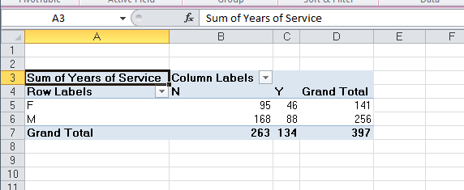
However, the sum of years is probably not what you would want.
In the options tab under Pivot Table Tools in the menu bar, click on the Active Field group and choose Value Field Settings. You will be able to change the summarisation method in the PivotTable in the dialog. Selecting the Average results in the PivotTable shown below. We see that the average number of years of service is not much different for holders of graduate degrees, but that females have much fewer years of service than males.
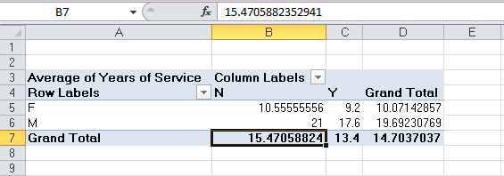
The beauty of pivotTables is that if you wish to change the analysis, you can simply uncheck the boxes in the field list or drag the variable names to different field areas. You may easily add multiple variables in the fields to create different views of the data.
Create PivotTables to find the average number of years of undergraduate study for each age group with and whithout a CPA and the number of employees in each age group with and without a CPA in the Excel file Accounting Professionals.
Create a PivotTable showing the count of the number of employees by age group.
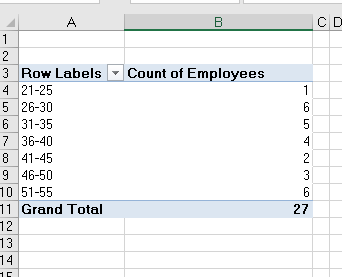
PivotTables also provide an easy method of constructing cross-tabulations for categorical data. Extend the one above, drag the field Graduate Degree? into the column label box in the field list. This PivotTable is a cross-tabulation of the number of employees in each age group who do or do not posses a graduate degree.
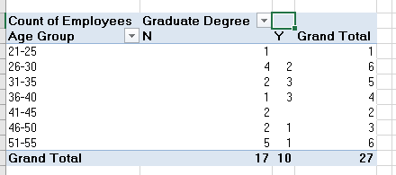
Open the file Bicycle Pivot. Create a PivotTable to determine the total revenue for material groups in each sales organisaiton.
Experiment with adding filters to the pivotTable, such as Distribution Channel. You can also drill down into the data by right clicking on the category Mountain bike, choose Expand/Collapse and then Expand, then choose the detail you want to see, in this case Material. Remove the drill down by removing the Material field in the field list for rows.
Try restricting to the first quarter of 2007. Add the field Date, and then right click on one of the dates displayed, choose Group, and add Months, and Years to the groups. At the top of the PivotTable then click on the dropdown box for Years and tick 2007, click on the dropdown box for Months and choose the first quarter (Jan, Feb, Mar). You can then drag the years and month up to the filter area.
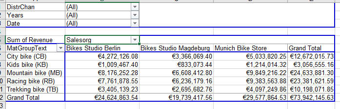
Sorting in Excel
Open the following excel file: Sorting-data
It contains the months and the percentage growth or decline of stocks. What we would like to do is look at those months when the S&P Index performed best, and see whether those were also months where Duke Energy stock performed best. We will sort the data in descending order.
We want to preserve the ordered pairs of a particular month and a particular S&P index return, and then also the particular S&P return and the Duke Energy stock return. If you select column B and choose Z-A sorting from the Data tab Excel will alert you that if I only sort by one column it would not be useful so you read the sort warning and tell it to expand the selection. This means the other columns touching column B will also be included in the sort.
So it displays at the top the best performing months for the S&P index and you can see quickly that there is not a strong association (as discovered in the previous labs for correlation etc). You can see in April 2009 (months are in US format of mm/dd/yy) when the S&P index performed one of its best months over the 14 year period that Duke Energy stock was down. In April 2003 there was a good return in S&P and excellent in Duke Energy.
Do the same exercise for Ascending sort order. There does appear to be a stronger association on the downside, when S&P index is down Duke Energy also tends to be down. If you repeat the exercise using column C we can see that for descending order so when Duke Energy was performing at its best only half of those 8 months showed positive returns for the S&P. Ascending order based on Duke Energy we can see that again a closer relationship exists when Duke Energy is down S&P is also down but at a fraction of the rate.
What this may tell us is that when the S&P index is down a little and perhaps some bad news about Duke Engergy is announced then the market reacts to Duke Energy news much more than it does to S&P as a whole.
Restore the data to its orginal order do that using the date column.
Solver Plug In
One of the most powerful tools that can be used with Excel, the Solver Plugin. It is useful when you have a function or a series of functions and you want to know what value to put in for X so that F(x) equals a certain kind of Y. We have three different choices for our Y, we can choose a certain target value, or we can choose a maximum or a minimum. We can also place constraints on our X for example that it must be a positive value or it needs to be zero, or one, and so on.
Open the Solver fiile we have a function where we have a discrete annual interest rate. We want to know what the discrete annual interest rate is with an initial balance of €1000, and results in €5000 after 10 years? The interest rate is the unknown which gives us a value of $5000.
If the solver plugin is installed you will see it on the Data tab at the far right.
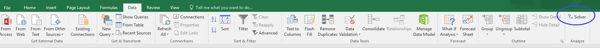
If it is not installed, from the File menu choose Options. In the Excel Options window choose Add-ins from the left side menu.
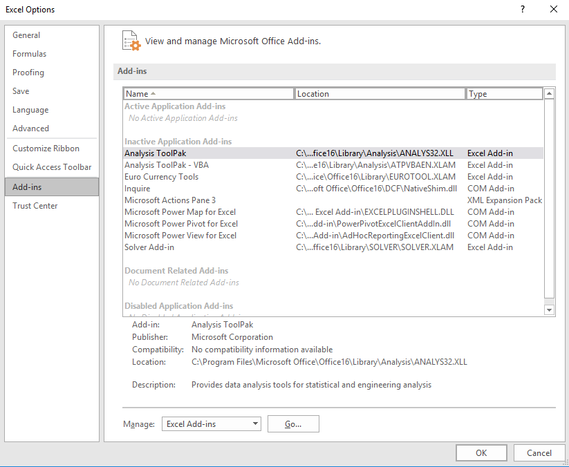
Click on the Go... button to manage Excel Add-Ins. Check the box beside Solver Add-In and click OK.
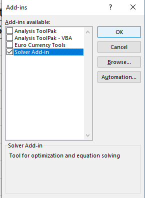
The Solver option now should be displayed on the data tab to the far right.
Click on the Solver option now. For this model we are building our objective is that the cell B17 is to have the value 5000 contained in it. This is to be acheived by changing variable cell C4.
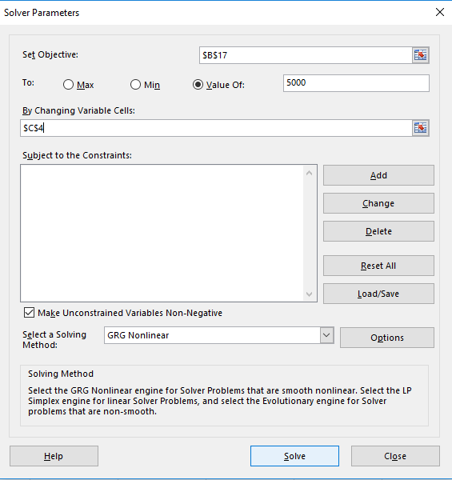
Click Solve. Excel carries out the function and delivers the result of 17.46% in cell B17. The values in column B for each year also changed to reflect the new interest rate resulting in 5000 at year 10.
We don't want to save the result so choose restore original values.
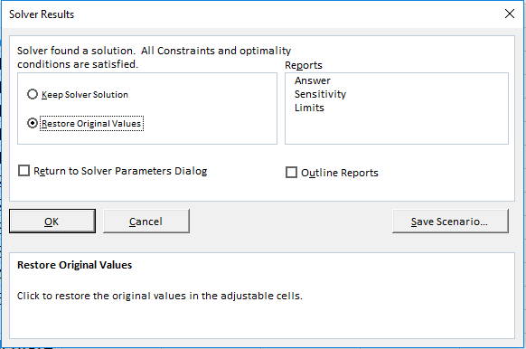
Next we want to solve where we want to keep our interest rate at 10% and change the initial balance in order to achieve the result of 5000 in 10 years. Use Solver again to calculate the initial balance (the changing variable is now B7).
What if we have a more challenging problem, we would like to know how many years will 1,000 at 10% interest take to get to 5,000? We can't do this using our current functions as each year calculates the balance using the previous year and the interest rate.
What we need to have is a variable for the number of years and it stays in one cell so that we have a reference to the number of years that requires a different formula.
So we have our initial balance multiplied by one plus the interest rate
(1+$C$4)*B7When we do repeated multiplication of the same thing by itself it is called An Exponent. In this case the 1000 initial balance is multiplied by the interest rate, the result is again multiplied by the interest rate and so on for 10 years in our example. So in a new cell if you entered the following formula you would get the same result of 2593.74 after 10 years of an interest rate of 10%
=B7*(1+C4)^10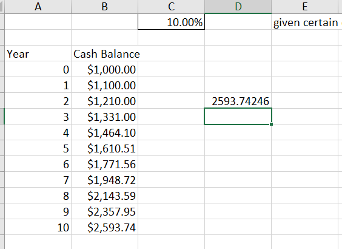
Now if we didn't want to state the 10 in the formula and use another cell so that it could be adjusted we can do that too.
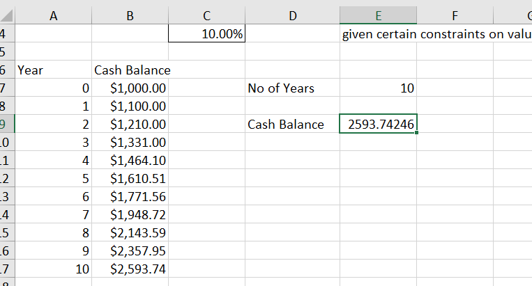
Next we use Solver again our objective is for cell E9 to have the value 5000 and we want soler to change cell E7 in order to figure out the solution.
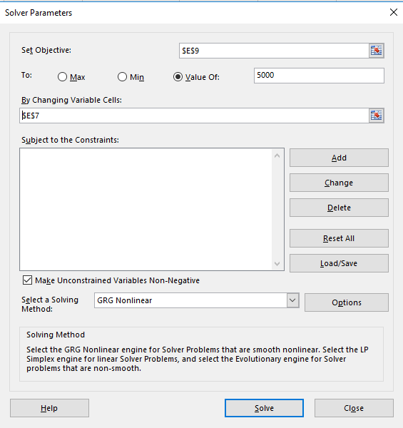
Solver works out that it would take 16.88 years to reach 5000 at a 10% interest rate.
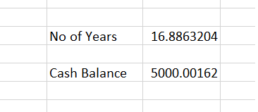